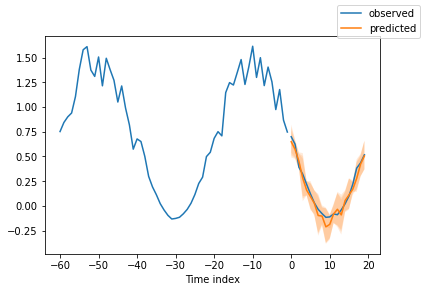
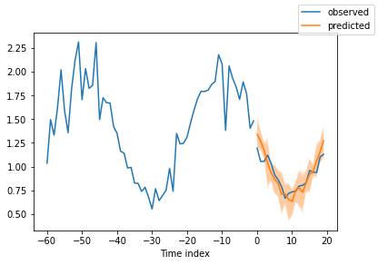
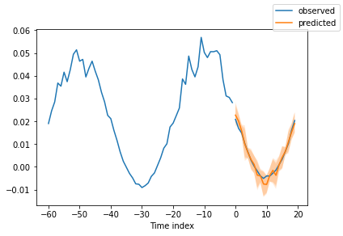
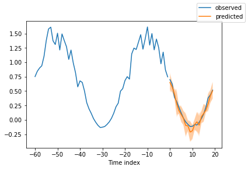
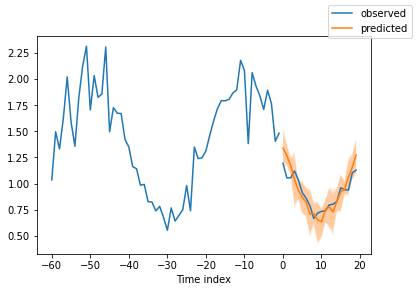
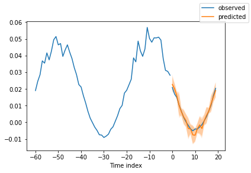

Multivariate quantiles and long horizon forecasting with N-HiTS#
This demo outines the application of the NHITS method using the PyTorch Forecasting. PyTorch Forecasting is a package that provides convenient implementations of several leading deep learning-based forecasting models, namely Temporal Fusion Transformers, N-BEATS, and DeepAR. PyTorch Forecasting is built using PyTorch Lightning, making it easier to train in multi-GPU compute environments, out-of-the-box. This demo was adapted from a tutorial in the PyTorch Forecasting Documentation.
Package Imports and Global Variables#
Note for Colab users: Run the following cell to install PyTorch Forecasting. After installation completes, you will likely need to restart the Colab runtime. If this is the case, a button RESTART RUNTIME will appear at the bottom of the next cell’s output.
if 'google.colab' in str(get_ipython()):
!pip install pytorch-forecasting[mqf2]
!pip install pytorch lightning
Looking in indexes: https://pypi.org/simple, https://us-python.pkg.dev/colab-wheels/public/simple/
Requirement already satisfied: pytorch-forecasting[mqf2] in /usr/local/lib/python3.8/dist-packages (0.10.3)
Requirement already satisfied: scipy<2.0,>=1.8 in /usr/local/lib/python3.8/dist-packages (from pytorch-forecasting[mqf2]) (1.10.0)
Requirement already satisfied: pytorch-lightning<2.0.0,>=1.2.4 in /usr/local/lib/python3.8/dist-packages (from pytorch-forecasting[mqf2]) (1.9.0)
Requirement already satisfied: statsmodels in /usr/local/lib/python3.8/dist-packages (from pytorch-forecasting[mqf2]) (0.12.2)
Requirement already satisfied: scikit-learn<1.2,>=0.24 in /usr/local/lib/python3.8/dist-packages (from pytorch-forecasting[mqf2]) (1.0.2)
Requirement already satisfied: pandas<2.0.0,>=1.3.0 in /usr/local/lib/python3.8/dist-packages (from pytorch-forecasting[mqf2]) (1.3.5)
Requirement already satisfied: matplotlib in /usr/local/lib/python3.8/dist-packages (from pytorch-forecasting[mqf2]) (3.2.2)
Requirement already satisfied: optuna<3.0.0,>=2.3.0 in /usr/local/lib/python3.8/dist-packages (from pytorch-forecasting[mqf2]) (2.10.1)
Requirement already satisfied: torch<2.0,>=1.7 in /usr/local/lib/python3.8/dist-packages (from pytorch-forecasting[mqf2]) (1.13.1+cu116)
Requirement already satisfied: cpflows<0.2.0,>=0.1.2 in /usr/local/lib/python3.8/dist-packages (from pytorch-forecasting[mqf2]) (0.1.2)
Requirement already satisfied: six>=1.15.0 in /usr/local/lib/python3.8/dist-packages (from cpflows<0.2.0,>=0.1.2->pytorch-forecasting[mqf2]) (1.15.0)
Requirement already satisfied: pytz>=2020.1 in /usr/local/lib/python3.8/dist-packages (from cpflows<0.2.0,>=0.1.2->pytorch-forecasting[mqf2]) (2022.7.1)
Requirement already satisfied: kiwisolver>=1.1.0 in /usr/local/lib/python3.8/dist-packages (from cpflows<0.2.0,>=0.1.2->pytorch-forecasting[mqf2]) (1.4.4)
Requirement already satisfied: future>=0.17.1 in /usr/local/lib/python3.8/dist-packages (from cpflows<0.2.0,>=0.1.2->pytorch-forecasting[mqf2]) (0.18.3)
Requirement already satisfied: numpy>=1.16 in /usr/local/lib/python3.8/dist-packages (from cpflows<0.2.0,>=0.1.2->pytorch-forecasting[mqf2]) (1.21.6)
Requirement already satisfied: tqdm>=4.23 in /usr/local/lib/python3.8/dist-packages (from cpflows<0.2.0,>=0.1.2->pytorch-forecasting[mqf2]) (4.64.1)
Requirement already satisfied: seaborn>=0.9.1 in /usr/local/lib/python3.8/dist-packages (from cpflows<0.2.0,>=0.1.2->pytorch-forecasting[mqf2]) (0.11.2)
Requirement already satisfied: cycler>=0.10.0 in /usr/local/lib/python3.8/dist-packages (from cpflows<0.2.0,>=0.1.2->pytorch-forecasting[mqf2]) (0.11.0)
Requirement already satisfied: python-dateutil>=2.8.1 in /usr/local/lib/python3.8/dist-packages (from cpflows<0.2.0,>=0.1.2->pytorch-forecasting[mqf2]) (2.8.2)
Requirement already satisfied: backports.functools-lru-cache>=1.6.1 in /usr/local/lib/python3.8/dist-packages (from cpflows<0.2.0,>=0.1.2->pytorch-forecasting[mqf2]) (1.6.4)
Requirement already satisfied: torchvision in /usr/local/lib/python3.8/dist-packages (from cpflows<0.2.0,>=0.1.2->pytorch-forecasting[mqf2]) (0.14.1+cu116)
Requirement already satisfied: pyparsing>=2.4.7 in /usr/local/lib/python3.8/dist-packages (from cpflows<0.2.0,>=0.1.2->pytorch-forecasting[mqf2]) (3.0.9)
Requirement already satisfied: h5py in /usr/local/lib/python3.8/dist-packages (from cpflows<0.2.0,>=0.1.2->pytorch-forecasting[mqf2]) (3.1.0)
Requirement already satisfied: subprocess32>=3.5.3 in /usr/local/lib/python3.8/dist-packages (from cpflows<0.2.0,>=0.1.2->pytorch-forecasting[mqf2]) (3.5.4)
Requirement already satisfied: packaging>=20.0 in /usr/local/lib/python3.8/dist-packages (from optuna<3.0.0,>=2.3.0->pytorch-forecasting[mqf2]) (23.0)
Requirement already satisfied: cmaes>=0.8.2 in /usr/local/lib/python3.8/dist-packages (from optuna<3.0.0,>=2.3.0->pytorch-forecasting[mqf2]) (0.9.1)
Requirement already satisfied: cliff in /usr/local/lib/python3.8/dist-packages (from optuna<3.0.0,>=2.3.0->pytorch-forecasting[mqf2]) (4.1.0)
Requirement already satisfied: sqlalchemy>=1.1.0 in /usr/local/lib/python3.8/dist-packages (from optuna<3.0.0,>=2.3.0->pytorch-forecasting[mqf2]) (1.4.46)
Requirement already satisfied: PyYAML in /usr/local/lib/python3.8/dist-packages (from optuna<3.0.0,>=2.3.0->pytorch-forecasting[mqf2]) (6.0)
Requirement already satisfied: alembic in /usr/local/lib/python3.8/dist-packages (from optuna<3.0.0,>=2.3.0->pytorch-forecasting[mqf2]) (1.9.3)
Requirement already satisfied: colorlog in /usr/local/lib/python3.8/dist-packages (from optuna<3.0.0,>=2.3.0->pytorch-forecasting[mqf2]) (6.7.0)
Requirement already satisfied: torchmetrics>=0.7.0 in /usr/local/lib/python3.8/dist-packages (from pytorch-lightning<2.0.0,>=1.2.4->pytorch-forecasting[mqf2]) (0.11.1)
Requirement already satisfied: fsspec[http]>2021.06.0 in /usr/local/lib/python3.8/dist-packages (from pytorch-lightning<2.0.0,>=1.2.4->pytorch-forecasting[mqf2]) (2023.1.0)
Requirement already satisfied: lightning-utilities>=0.4.2 in /usr/local/lib/python3.8/dist-packages (from pytorch-lightning<2.0.0,>=1.2.4->pytorch-forecasting[mqf2]) (0.6.0.post0)
Requirement already satisfied: typing-extensions>=4.0.0 in /usr/local/lib/python3.8/dist-packages (from pytorch-lightning<2.0.0,>=1.2.4->pytorch-forecasting[mqf2]) (4.4.0)
Requirement already satisfied: threadpoolctl>=2.0.0 in /usr/local/lib/python3.8/dist-packages (from scikit-learn<1.2,>=0.24->pytorch-forecasting[mqf2]) (3.1.0)
Requirement already satisfied: joblib>=0.11 in /usr/local/lib/python3.8/dist-packages (from scikit-learn<1.2,>=0.24->pytorch-forecasting[mqf2]) (1.2.0)
Requirement already satisfied: patsy>=0.5 in /usr/local/lib/python3.8/dist-packages (from statsmodels->pytorch-forecasting[mqf2]) (0.5.3)
Requirement already satisfied: requests in /usr/local/lib/python3.8/dist-packages (from fsspec[http]>2021.06.0->pytorch-lightning<2.0.0,>=1.2.4->pytorch-forecasting[mqf2]) (2.25.1)
Requirement already satisfied: aiohttp!=4.0.0a0,!=4.0.0a1 in /usr/local/lib/python3.8/dist-packages (from fsspec[http]>2021.06.0->pytorch-lightning<2.0.0,>=1.2.4->pytorch-forecasting[mqf2]) (3.8.3)
Requirement already satisfied: greenlet!=0.4.17 in /usr/local/lib/python3.8/dist-packages (from sqlalchemy>=1.1.0->optuna<3.0.0,>=2.3.0->pytorch-forecasting[mqf2]) (2.0.2)
Requirement already satisfied: importlib-resources in /usr/local/lib/python3.8/dist-packages (from alembic->optuna<3.0.0,>=2.3.0->pytorch-forecasting[mqf2]) (5.10.2)
Requirement already satisfied: importlib-metadata in /usr/local/lib/python3.8/dist-packages (from alembic->optuna<3.0.0,>=2.3.0->pytorch-forecasting[mqf2]) (6.0.0)
Requirement already satisfied: Mako in /usr/local/lib/python3.8/dist-packages (from alembic->optuna<3.0.0,>=2.3.0->pytorch-forecasting[mqf2]) (1.2.4)
Requirement already satisfied: autopage>=0.4.0 in /usr/local/lib/python3.8/dist-packages (from cliff->optuna<3.0.0,>=2.3.0->pytorch-forecasting[mqf2]) (0.5.1)
Requirement already satisfied: cmd2>=1.0.0 in /usr/local/lib/python3.8/dist-packages (from cliff->optuna<3.0.0,>=2.3.0->pytorch-forecasting[mqf2]) (2.4.3)
Requirement already satisfied: PrettyTable>=0.7.2 in /usr/local/lib/python3.8/dist-packages (from cliff->optuna<3.0.0,>=2.3.0->pytorch-forecasting[mqf2]) (3.6.0)
Requirement already satisfied: stevedore>=2.0.1 in /usr/local/lib/python3.8/dist-packages (from cliff->optuna<3.0.0,>=2.3.0->pytorch-forecasting[mqf2]) (4.1.1)
Requirement already satisfied: pillow!=8.3.*,>=5.3.0 in /usr/local/lib/python3.8/dist-packages (from torchvision->cpflows<0.2.0,>=0.1.2->pytorch-forecasting[mqf2]) (7.1.2)
Requirement already satisfied: async-timeout<5.0,>=4.0.0a3 in /usr/local/lib/python3.8/dist-packages (from aiohttp!=4.0.0a0,!=4.0.0a1->fsspec[http]>2021.06.0->pytorch-lightning<2.0.0,>=1.2.4->pytorch-forecasting[mqf2]) (4.0.2)
Requirement already satisfied: aiosignal>=1.1.2 in /usr/local/lib/python3.8/dist-packages (from aiohttp!=4.0.0a0,!=4.0.0a1->fsspec[http]>2021.06.0->pytorch-lightning<2.0.0,>=1.2.4->pytorch-forecasting[mqf2]) (1.3.1)
Requirement already satisfied: frozenlist>=1.1.1 in /usr/local/lib/python3.8/dist-packages (from aiohttp!=4.0.0a0,!=4.0.0a1->fsspec[http]>2021.06.0->pytorch-lightning<2.0.0,>=1.2.4->pytorch-forecasting[mqf2]) (1.3.3)
Requirement already satisfied: multidict<7.0,>=4.5 in /usr/local/lib/python3.8/dist-packages (from aiohttp!=4.0.0a0,!=4.0.0a1->fsspec[http]>2021.06.0->pytorch-lightning<2.0.0,>=1.2.4->pytorch-forecasting[mqf2]) (6.0.4)
Requirement already satisfied: yarl<2.0,>=1.0 in /usr/local/lib/python3.8/dist-packages (from aiohttp!=4.0.0a0,!=4.0.0a1->fsspec[http]>2021.06.0->pytorch-lightning<2.0.0,>=1.2.4->pytorch-forecasting[mqf2]) (1.8.2)
Requirement already satisfied: charset-normalizer<3.0,>=2.0 in /usr/local/lib/python3.8/dist-packages (from aiohttp!=4.0.0a0,!=4.0.0a1->fsspec[http]>2021.06.0->pytorch-lightning<2.0.0,>=1.2.4->pytorch-forecasting[mqf2]) (2.1.1)
Requirement already satisfied: attrs>=17.3.0 in /usr/local/lib/python3.8/dist-packages (from aiohttp!=4.0.0a0,!=4.0.0a1->fsspec[http]>2021.06.0->pytorch-lightning<2.0.0,>=1.2.4->pytorch-forecasting[mqf2]) (22.2.0)
Requirement already satisfied: pyperclip>=1.6 in /usr/local/lib/python3.8/dist-packages (from cmd2>=1.0.0->cliff->optuna<3.0.0,>=2.3.0->pytorch-forecasting[mqf2]) (1.8.2)
Requirement already satisfied: wcwidth>=0.1.7 in /usr/local/lib/python3.8/dist-packages (from cmd2>=1.0.0->cliff->optuna<3.0.0,>=2.3.0->pytorch-forecasting[mqf2]) (0.2.6)
Requirement already satisfied: zipp>=0.5 in /usr/local/lib/python3.8/dist-packages (from importlib-metadata->alembic->optuna<3.0.0,>=2.3.0->pytorch-forecasting[mqf2]) (3.12.0)
Requirement already satisfied: pbr!=2.1.0,>=2.0.0 in /usr/local/lib/python3.8/dist-packages (from stevedore>=2.0.1->cliff->optuna<3.0.0,>=2.3.0->pytorch-forecasting[mqf2]) (5.11.1)
Requirement already satisfied: MarkupSafe>=0.9.2 in /usr/local/lib/python3.8/dist-packages (from Mako->alembic->optuna<3.0.0,>=2.3.0->pytorch-forecasting[mqf2]) (2.0.1)
Requirement already satisfied: urllib3<1.27,>=1.21.1 in /usr/local/lib/python3.8/dist-packages (from requests->fsspec[http]>2021.06.0->pytorch-lightning<2.0.0,>=1.2.4->pytorch-forecasting[mqf2]) (1.24.3)
Requirement already satisfied: chardet<5,>=3.0.2 in /usr/local/lib/python3.8/dist-packages (from requests->fsspec[http]>2021.06.0->pytorch-lightning<2.0.0,>=1.2.4->pytorch-forecasting[mqf2]) (4.0.0)
Requirement already satisfied: certifi>=2017.4.17 in /usr/local/lib/python3.8/dist-packages (from requests->fsspec[http]>2021.06.0->pytorch-lightning<2.0.0,>=1.2.4->pytorch-forecasting[mqf2]) (2022.12.7)
Requirement already satisfied: idna<3,>=2.5 in /usr/local/lib/python3.8/dist-packages (from requests->fsspec[http]>2021.06.0->pytorch-lightning<2.0.0,>=1.2.4->pytorch-forecasting[mqf2]) (2.10)
Looking in indexes: https://pypi.org/simple, https://us-python.pkg.dev/colab-wheels/public/simple/
Collecting pytorch
Using cached pytorch-1.0.2.tar.gz (689 bytes)
Preparing metadata (setup.py) ... ?25l?25hdone
Collecting lightning
Using cached lightning-1.9.0-py3-none-any.whl (2.1 MB)
Requirement already satisfied: psutil<7.0 in /usr/local/lib/python3.8/dist-packages (from lightning) (5.4.8)
Requirement already satisfied: numpy<3.0,>=1.17.2 in /usr/local/lib/python3.8/dist-packages (from lightning) (1.21.6)
Requirement already satisfied: PyYAML<8.0,>=5.4 in /usr/local/lib/python3.8/dist-packages (from lightning) (6.0)
Collecting starlette<2.0
Using cached starlette-0.24.0-py3-none-any.whl (65 kB)
Requirement already satisfied: fsspec[http]<2024.0,>2021.06.0 in /usr/local/lib/python3.8/dist-packages (from lightning) (2023.1.0)
Requirement already satisfied: traitlets<7.0,>=5.3.0 in /usr/local/lib/python3.8/dist-packages (from lightning) (5.7.1)
Requirement already satisfied: lightning-utilities<2.0,>=0.4.2 in /usr/local/lib/python3.8/dist-packages (from lightning) (0.6.0.post0)
Collecting beautifulsoup4<6.0,>=4.8.0
Using cached beautifulsoup4-4.11.2-py3-none-any.whl (129 kB)
Requirement already satisfied: tqdm<6.0,>=4.57.0 in /usr/local/lib/python3.8/dist-packages (from lightning) (4.64.1)
Requirement already satisfied: Jinja2<5.0 in /usr/local/lib/python3.8/dist-packages (from lightning) (2.11.3)
Collecting fastapi<0.89.0
Using cached fastapi-0.88.0-py3-none-any.whl (55 kB)
Collecting packaging<23.0,>=17.1
Using cached packaging-22.0-py3-none-any.whl (42 kB)
Requirement already satisfied: torch<3.0,>=1.10.0 in /usr/local/lib/python3.8/dist-packages (from lightning) (1.13.1+cu116)
Requirement already satisfied: pydantic<3.0 in /usr/local/lib/python3.8/dist-packages (from lightning) (1.10.4)
Requirement already satisfied: urllib3<3.0 in /usr/local/lib/python3.8/dist-packages (from lightning) (1.24.3)
Collecting rich<15.0
Using cached rich-13.3.1-py3-none-any.whl (239 kB)
Collecting arrow<3.0,>=1.2.0
Using cached arrow-1.2.3-py3-none-any.whl (66 kB)
Collecting uvicorn<2.0
Using cached uvicorn-0.20.0-py3-none-any.whl (56 kB)
Collecting croniter<1.4.0,>=1.3.0
Using cached croniter-1.3.8-py2.py3-none-any.whl (18 kB)
Collecting deepdiff<8.0,>=5.7.0
Using cached deepdiff-6.2.3-py3-none-any.whl (73 kB)
Collecting lightning-cloud<2.0,>=0.5.12
Using cached lightning_cloud-0.5.24-py3-none-any.whl (484 kB)
Collecting websocket-client<3.0
Using cached websocket_client-1.5.1-py3-none-any.whl (55 kB)
Collecting dateutils<2.0
Using cached dateutils-0.6.12-py2.py3-none-any.whl (5.7 kB)
Collecting websockets<12.0
Using cached websockets-10.4-cp38-cp38-manylinux_2_5_x86_64.manylinux1_x86_64.manylinux_2_17_x86_64.manylinux2014_x86_64.whl (106 kB)
Requirement already satisfied: requests<4.0 in /usr/local/lib/python3.8/dist-packages (from lightning) (2.25.1)
Requirement already satisfied: click<10.0 in /usr/local/lib/python3.8/dist-packages (from lightning) (7.1.2)
Requirement already satisfied: typing-extensions<6.0,>=4.0.0 in /usr/local/lib/python3.8/dist-packages (from lightning) (4.4.0)
Requirement already satisfied: torchmetrics<2.0,>=0.7.0 in /usr/local/lib/python3.8/dist-packages (from lightning) (0.11.1)
Collecting starsessions<2.0,>=1.2.1
Using cached starsessions-1.3.0-py3-none-any.whl (10 kB)
Collecting inquirer<5.0,>=2.10.0
Using cached inquirer-3.1.2-py3-none-any.whl (17 kB)
Requirement already satisfied: python-dateutil>=2.7.0 in /usr/local/lib/python3.8/dist-packages (from arrow<3.0,>=1.2.0->lightning) (2.8.2)
Collecting soupsieve>1.2
Using cached soupsieve-2.3.2.post1-py3-none-any.whl (37 kB)
Requirement already satisfied: pytz in /usr/local/lib/python3.8/dist-packages (from dateutils<2.0->lightning) (2022.7.1)
Collecting orjson
Using cached orjson-3.8.5-cp38-cp38-manylinux_2_28_x86_64.whl (140 kB)
Collecting ordered-set<4.2.0,>=4.0.2
Using cached ordered_set-4.1.0-py3-none-any.whl (7.6 kB)
Collecting starlette<2.0
Using cached starlette-0.22.0-py3-none-any.whl (64 kB)
Collecting anyio<5,>=3.4.0
Using cached anyio-3.6.2-py3-none-any.whl (80 kB)
Requirement already satisfied: aiohttp!=4.0.0a0,!=4.0.0a1 in /usr/local/lib/python3.8/dist-packages (from fsspec[http]<2024.0,>2021.06.0->lightning) (3.8.3)
Collecting python-editor>=1.0.4
Using cached python_editor-1.0.4-py3-none-any.whl (4.9 kB)
Collecting blessed>=1.19.0
Using cached blessed-1.20.0-py2.py3-none-any.whl (58 kB)
Collecting readchar>=3.0.6
Using cached readchar-4.0.3-py3-none-any.whl (8.4 kB)
Requirement already satisfied: MarkupSafe>=0.23 in /usr/local/lib/python3.8/dist-packages (from Jinja2<5.0->lightning) (2.0.1)
Requirement already satisfied: six in /usr/local/lib/python3.8/dist-packages (from lightning-cloud<2.0,>=0.5.12->lightning) (1.15.0)
Collecting fastapi[all]
Using cached fastapi-0.90.0-py3-none-any.whl (56 kB)
Collecting pyjwt
Using cached PyJWT-2.6.0-py3-none-any.whl (20 kB)
Requirement already satisfied: idna<3,>=2.5 in /usr/local/lib/python3.8/dist-packages (from requests<4.0->lightning) (2.10)
Requirement already satisfied: certifi>=2017.4.17 in /usr/local/lib/python3.8/dist-packages (from requests<4.0->lightning) (2022.12.7)
Requirement already satisfied: chardet<5,>=3.0.2 in /usr/local/lib/python3.8/dist-packages (from requests<4.0->lightning) (4.0.0)
Collecting pygments<3.0.0,>=2.14.0
Using cached Pygments-2.14.0-py3-none-any.whl (1.1 MB)
Collecting markdown-it-py<3.0.0,>=2.1.0
Using cached markdown_it_py-2.1.0-py3-none-any.whl (84 kB)
Collecting itsdangerous<3.0.0,>=2.0.1
Using cached itsdangerous-2.1.2-py3-none-any.whl (15 kB)
Collecting h11>=0.8
Using cached h11-0.14.0-py3-none-any.whl (58 kB)
Requirement already satisfied: yarl<2.0,>=1.0 in /usr/local/lib/python3.8/dist-packages (from aiohttp!=4.0.0a0,!=4.0.0a1->fsspec[http]<2024.0,>2021.06.0->lightning) (1.8.2)
Requirement already satisfied: frozenlist>=1.1.1 in /usr/local/lib/python3.8/dist-packages (from aiohttp!=4.0.0a0,!=4.0.0a1->fsspec[http]<2024.0,>2021.06.0->lightning) (1.3.3)
Requirement already satisfied: aiosignal>=1.1.2 in /usr/local/lib/python3.8/dist-packages (from aiohttp!=4.0.0a0,!=4.0.0a1->fsspec[http]<2024.0,>2021.06.0->lightning) (1.3.1)
Requirement already satisfied: charset-normalizer<3.0,>=2.0 in /usr/local/lib/python3.8/dist-packages (from aiohttp!=4.0.0a0,!=4.0.0a1->fsspec[http]<2024.0,>2021.06.0->lightning) (2.1.1)
Requirement already satisfied: attrs>=17.3.0 in /usr/local/lib/python3.8/dist-packages (from aiohttp!=4.0.0a0,!=4.0.0a1->fsspec[http]<2024.0,>2021.06.0->lightning) (22.2.0)
Requirement already satisfied: multidict<7.0,>=4.5 in /usr/local/lib/python3.8/dist-packages (from aiohttp!=4.0.0a0,!=4.0.0a1->fsspec[http]<2024.0,>2021.06.0->lightning) (6.0.4)
Requirement already satisfied: async-timeout<5.0,>=4.0.0a3 in /usr/local/lib/python3.8/dist-packages (from aiohttp!=4.0.0a0,!=4.0.0a1->fsspec[http]<2024.0,>2021.06.0->lightning) (4.0.2)
Collecting sniffio>=1.1
Using cached sniffio-1.3.0-py3-none-any.whl (10 kB)
Requirement already satisfied: wcwidth>=0.1.4 in /usr/local/lib/python3.8/dist-packages (from blessed>=1.19.0->inquirer<5.0,>=2.10.0->lightning) (0.2.6)
Collecting mdurl~=0.1
Using cached mdurl-0.1.2-py3-none-any.whl (10.0 kB)
Requirement already satisfied: setuptools>=41.0 in /usr/local/lib/python3.8/dist-packages (from readchar>=3.0.6->inquirer<5.0,>=2.10.0->lightning) (57.4.0)
Collecting fastapi[all]
Using cached fastapi-0.89.1-py3-none-any.whl (55 kB)
Using cached fastapi-0.89.0-py3-none-any.whl (55 kB)
Collecting ujson!=4.0.2,!=4.1.0,!=4.2.0,!=4.3.0,!=5.0.0,!=5.1.0,>=4.0.1
Using cached ujson-5.7.0-cp38-cp38-manylinux_2_17_x86_64.manylinux2014_x86_64.whl (52 kB)
Collecting python-multipart>=0.0.5
Using cached python_multipart-0.0.5-py3-none-any.whl
Collecting httpx>=0.23.0
Using cached httpx-0.23.3-py3-none-any.whl (71 kB)
Collecting email-validator>=1.1.1
Using cached email_validator-1.3.1-py2.py3-none-any.whl (22 kB)
Requirement already satisfied: dnspython>=1.15.0 in /usr/local/lib/python3.8/dist-packages (from email-validator>=1.1.1->fastapi<0.89.0->lightning) (2.3.0)
Collecting httpcore<0.17.0,>=0.15.0
Using cached httpcore-0.16.3-py3-none-any.whl (69 kB)
Requirement already satisfied: rfc3986[idna2008]<2,>=1.3 in /usr/local/lib/python3.8/dist-packages (from httpx>=0.23.0->fastapi<0.89.0->lightning) (1.5.0)
Collecting uvloop!=0.15.0,!=0.15.1,>=0.14.0
Using cached uvloop-0.17.0-cp38-cp38-manylinux_2_17_x86_64.manylinux2014_x86_64.whl (4.6 MB)
Collecting watchfiles>=0.13
Using cached watchfiles-0.18.1-cp37-abi3-manylinux_2_17_x86_64.manylinux2014_x86_64.whl (1.2 MB)
Collecting python-dotenv>=0.13
Using cached python_dotenv-0.21.1-py3-none-any.whl (19 kB)
Collecting httptools>=0.5.0
Using cached httptools-0.5.0-cp38-cp38-manylinux_2_5_x86_64.manylinux1_x86_64.manylinux_2_17_x86_64.manylinux2014_x86_64.whl (427 kB)
Building wheels for collected packages: pytorch
error: subprocess-exited-with-error
× python setup.py bdist_wheel did not run successfully.
│ exit code: 1
╰─> See above for output.
note: This error originates from a subprocess, and is likely not a problem with pip.
Building wheel for pytorch (setup.py) ... ?25lerror
ERROR: Failed building wheel for pytorch
?25h Running setup.py clean for pytorch
Failed to build pytorch
Installing collected packages: pytorch, python-editor, websockets, websocket-client, uvloop, ujson, soupsieve, sniffio, readchar, python-multipart, python-dotenv, pyjwt, pygments, packaging, orjson, ordered-set, mdurl, itsdangerous, httptools, h11, email-validator, blessed, uvicorn, markdown-it-py, inquirer, deepdiff, dateutils, croniter, beautifulsoup4, arrow, anyio, watchfiles, starlette, rich, httpcore, starsessions, httpx, fastapi, lightning-cloud, lightning
error: subprocess-exited-with-error
× Running setup.py install for pytorch did not run successfully.
│ exit code: 1
╰─> See above for output.
note: This error originates from a subprocess, and is likely not a problem with pip.
Running setup.py install for pytorch ... ?25l?25herror
error: legacy-install-failure
× Encountered error while trying to install package.
╰─> pytorch
note: This is an issue with the package mentioned above, not pip.
hint: See above for output from the failure.
import os
import warnings
warnings.filterwarnings("ignore")
import matplotlib.pyplot as plt
import numpy as np
import pandas as pd
import pytorch_lightning as pl
from pytorch_lightning.callbacks import EarlyStopping
import torch
from pytorch_forecasting import Baseline, NHiTS, TimeSeriesDataSet
from pytorch_forecasting.data import NaNLabelEncoder
from pytorch_forecasting.data.examples import generate_ar_data
from pytorch_forecasting.metrics import SMAPE, MQF2DistributionLoss, QuantileLoss
Load Data#
PyTorch forecasting provides the ability to generate a synthetic dataset using the generate_ar_data function. The generated data consists of 100 time series each with 400 time steps. Each time series is generated with the specified seasonality, trend and level along with a noise term. This is the time series we will be working with throughout the demo.
data = generate_ar_data(seasonality=10.0, timesteps=400, n_series=100, seed=42)
data["date"] = pd.Timestamp("2020-01-01") + pd.to_timedelta(data.time_idx, "D")
data.head()
| series | time_idx | value | date | |
|---|---|---|---|---|
| 0 | 0 | 0 | -0.000000 | 2020-01-01 |
| 1 | 0 | 1 | -0.046501 | 2020-01-02 |
| 2 | 0 | 2 | -0.097796 | 2020-01-03 |
| 3 | 0 | 3 | -0.144397 | 2020-01-04 |
| 4 | 0 | 4 | -0.177954 | 2020-01-05 |
# create dataset and dataloaders
max_encoder_length = 60
max_prediction_length = 20
training_cutoff = data["time_idx"].max() - max_prediction_length
context_length = max_encoder_length
prediction_length = max_prediction_length
training = TimeSeriesDataSet(
data[lambda x: x.time_idx <= training_cutoff],
time_idx="time_idx",
target="value",
categorical_encoders={"series": NaNLabelEncoder().fit(data.series)},
group_ids=["series"],
time_varying_unknown_reals=["value"],
max_encoder_length=context_length,
max_prediction_length=prediction_length,
)
validation = TimeSeriesDataSet.from_dataset(training, data, min_prediction_idx=training_cutoff + 1)
batch_size = 128
train_dataloader = training.to_dataloader(train=True, batch_size=batch_size, num_workers=0)
val_dataloader = validation.to_dataloader(train=False, batch_size=batch_size, num_workers=0)
Model#
NHITS Overview#

NHITS is a popular deep learning based approach to time series forecasting. In particualr, NHITS adapts the NBEATS architecture to perform long sequence time series forecasting (LSTF); a task where the length of the input and output sequence are large. NHITS learns a global model from historical data of one or more time series. Thus, although the input and output space is univariate, NHITS can be used to jointly model a set of related time series. The architecture consists of deep stacks of fully connected layers connected with forward and backward residual links. The forwad links aggregate partial forecast to yield final forecast. Alternatively, backward links subtract out input signal corresponding to already predicted partial forecast from input prior to being passed to the next stack. NHITS builds on NBEATS by enhancing its input decomposition via multi-rate data sampling and its output synthesizer via multi-scale interpolation. This increases both the accuracy and computational efficiency of the approach in the LSTF setting.
Some of the additonal benefits of NHITS include:
Interpretability: Allows for hierarchical decomposition of a forecasts into trend and seasonal components which enhances interpretability.
Ensembling: Ensembles models fit with different loss functions and time horizons. The final prediction is mean of models in ensemble.
Efficient: Avoids the use of recurrent structute and predicts entire ouput sequence in single forward pass.
Covariates: NHITS allows for the inclusion of covariates compared to NBEATS which does not.
Model Definition#
Using the Pytorch Forecasting package, an NHITS model can easily be initialized using the NHiTS.from_dataset method. This method constructs a NHITS model using the characteristics of the TimeSeriesDataset that it is operating on. The arguments of the method include:
dataset: (TimeSeriesDataset) time series datasethidden_size: (int) – size of hidden layers and can range from 8 to 1024 - use 32-128 if no covariates are employed. Defaults to 512.learning_rate: (float) The learning rate of the optimization procedure.weight_decay: (float) The weight decay that is applied to the model parameters.
PyTorch Forecasting is flexible enough to use NHiTS with different loss functions, enabling not only point forecasts but also probabilistic ones. Here, we will demonstrate not only a typical quantile regression but a multivariate quantile regression with MQF2DistributionLoss which allows calculation sampling consistent paths along a prediction horizon.
For additional details in regards to the NHiTS class, consult the PyTorch Forecasting Documentation.
pl.seed_everything(42)
net = NHiTS.from_dataset(
training,
learning_rate=0.09,
weight_decay=1e-2,
loss=MQF2DistributionLoss(prediction_length=max_prediction_length),
)
INFO:lightning_fabric.utilities.seed:Global seed set to 42
Training and Validation#
We first define a pytorch lighting trainer which encapsulates the training process and allows us to easily implement a training and validation loop with the specified parameters. The arguments to the trainer include:
max_epochs: (Optional[int]) – Stop training once this number of epochs is reached.gpus: (Union[int, None]) Number of GPUs to train on (int). Default: None.callbacks: (Union[List[Callback], Callback, None]) – Add a callback or list of callbacks.
Subsequently, we can use the fit method of the trainer with the net, train_dataloader and val_dataloader to perform the training and validation loop.
For more information regarding the pl.Trainer class, consult the PyTorch Lightning documentation.
early_stop_callback = EarlyStopping(monitor="val_loss", min_delta=1e-4, patience=3, verbose=False, mode="min")
trainer = pl.Trainer(
max_epochs=25,
gpus=1,
enable_model_summary=True,
callbacks=[early_stop_callback],
enable_checkpointing=True,
)
trainer.fit(
net,
train_dataloaders=train_dataloader,
val_dataloaders=val_dataloader,
)
/usr/local/lib/python3.8/dist-packages/pytorch_lightning/trainer/connectors/accelerator_connector.py:467: LightningDeprecationWarning: Setting `Trainer(gpus=1)` is deprecated in v1.7 and will be removed in v2.0. Please use `Trainer(accelerator='gpu', devices=1)` instead.
rank_zero_deprecation(
INFO:pytorch_lightning.utilities.rank_zero:GPU available: True (cuda), used: True
INFO:pytorch_lightning.utilities.rank_zero:TPU available: False, using: 0 TPU cores
INFO:pytorch_lightning.utilities.rank_zero:IPU available: False, using: 0 IPUs
INFO:pytorch_lightning.utilities.rank_zero:HPU available: False, using: 0 HPUs
INFO:pytorch_lightning.accelerators.cuda:LOCAL_RANK: 0 - CUDA_VISIBLE_DEVICES: [0]
INFO:pytorch_lightning.callbacks.model_summary:
| Name | Type | Params
---------------------------------------------------------
0 | loss | MQF2DistributionLoss | 5.1 K
1 | logging_metrics | ModuleList | 0
2 | embeddings | MultiEmbedding | 0
3 | model | NHiTS | 971 K
---------------------------------------------------------
976 K Trainable params
0 Non-trainable params
976 K Total params
3.907 Total estimated model params size (MB)
Visualize Forecasts#
Quantile Forecasts#
best_model_path = trainer.checkpoint_callback.best_model_path
best_model = NHiTS.load_from_checkpoint(best_model_path)
raw_predictions, x = best_model.predict(val_dataloader, mode="raw", return_x=True)
for idx in range(5): # plot 10 examples
best_model.plot_prediction(x, raw_predictions, idx=idx);

 





Interpretable Forecasts#
for idx in range(2): # plot 10 examples
best_model.plot_interpretation(x, raw_predictions, idx=idx);

Sampling Forecasts#
# sample 500 paths
samples = best_model.loss.sample(raw_predictions["prediction"][[0]], n_samples=500, )[0]
# plot prediction
fig = best_model.plot_prediction(x, raw_predictions, idx=0, add_loss_to_title=True, )
ax = fig.get_axes()[0]
# plot first two sampled paths
ax.plot(samples[:, 0], color="g", label="Sample 1", )
ax.plot(samples[:, 1], color="r", label="Sample 2")
fig.legend();
As expected, the variance of predictions is smaller within each sample than accross all samples.
print(f"Var(all samples) = {samples.var():.4f}")
print(f"Mean(Var(sample)) = {samples.var(0).mean():.4f}")
Var(all samples) = 0.1378
Mean(Var(sample)) = 0.1246
We can now do something new and plot the distribution of sums of forecasts over the entire prediction range.
plt.hist(samples.sum(0).numpy(), bins=30)
plt.xlabel("Sum of predictions")
plt.ylabel("Frequency");

Quantitative Results#
In order to quantitatively assess the performance of the model we can use the Symmetric Mean Absolute Percentage Error. Pytorch Forecasting includes this and other metrics in the pytorch_forecasting.metrics module. As a baseline, we can also define a naive forecasting model, pytorch_forecasting.Baseline, that produces forecasts by repeating the last known value in the time series. Unsurprisingly, the NHITS model is able to outperform this naive baseline.
# calculate baseline absolute error
actuals = torch.cat([y[0] for x, y in iter(val_dataloader)])
baseline_predictions = Baseline().predict(val_dataloader)
predictions = best_model.predict(val_dataloader)
baseline_smape = SMAPE()(baseline_predictions, actuals)
nhits_smape = SMAPE()(predictions, actuals)
print(nhits_smape.item(), baseline_smape.item())
0.14025408029556274 0.5462026596069336